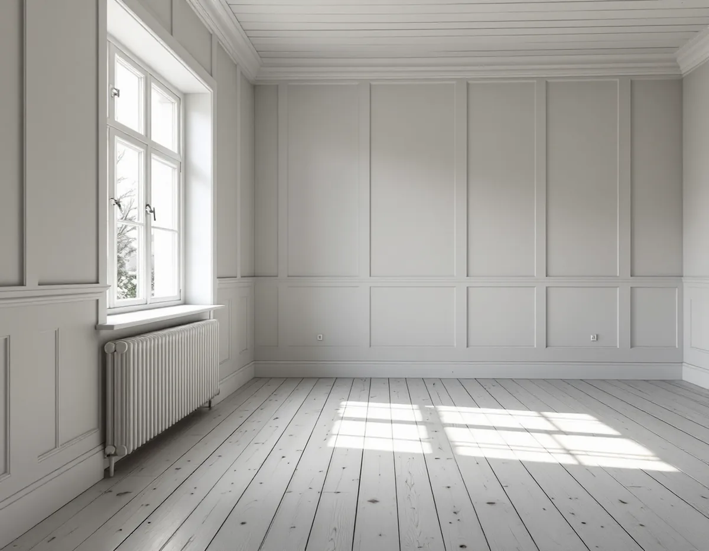
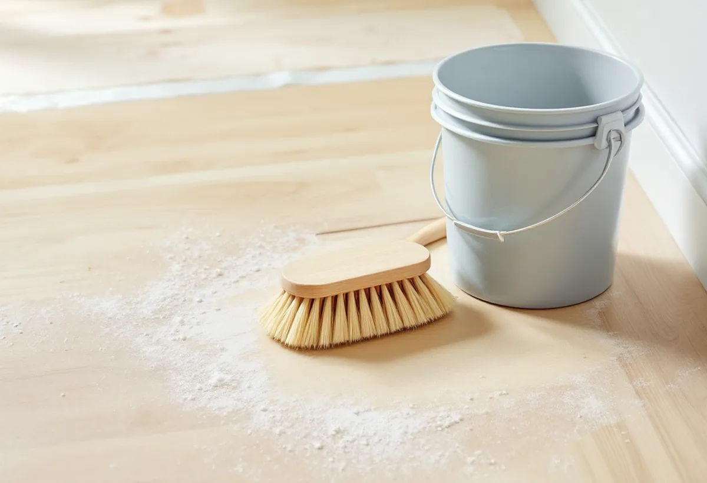

Platsbesök
Vi kontrollerar träslag och golvtyp och mäter fuktkvoten i brädorna.
Ett slipat furugolv som lutas och såpas får en ljus och matt yta. Det är en behandling med egna regler: luten är frätande, den ska läggas i en viss ordning och den passar inte med lack. Geal Entreprenad AB slipar och ytbehandlar trägolv i Bromma, och väljer du lut och såpa går vi igenom hela arbetsgången med dig innan första strykningen.

Stockholms stads vägledning Varsam utveckling av småhus- och villaområden beskriver hur nya trädgårdsstäder kom till i Äppelviken, Ålsten och Smedslätten under 1920-talet. I Nockeby, Höglandet, Ålsten och Ulvsunda blev 1920-talets klassiska formspråk rådande, med enkla volymer i ett och ett halvt plan. Södra Ängby blev den sista stadsdelen som planerades efter trädgårdsstadens principer och är enligt vägledningen ett av Europas största sammanhängande områden av villor från 1930-talet i modernistisk stil.
I vägledningens tabell på sidorna 85–86 är Södra Ängby både riksintresse och kulturhistoriskt värdefull miljö och har ett äldre miljöprogram. Ålsten är riksintresse och värdefull miljö, och Nockeby, Höglandet, Smedslätten och Äppelviken räknas som värdefulla miljöer. Vägledningen konstaterar samtidigt att många hus har förändrats interiört och byggts till genom åren. Inne i huset handlar det oftast om att välja en yta som passar golvet du har.

Golvbranschens riktlinjer för lutbehandling, LUT 22, beskriver traditionell lutbehandling på homogena golv av fur och gran. För lövträ finns särskilda produkter som riktlinjerna inte går in på, och på lamellgolv ska man vara extra försiktig. Lut består av natrium- och kaliumhydroxid i vattenlösning och är starkt frätande. Ett lutat golv får en djupare och jämnare infärgning när det pigmenteras efteråt.
Riktlinjerna för oljebehandling, OLJA 22, beskriver samma effekt från andra hållet: att luta ett golv av fur eller gran före grundbehandlingen bevarar ljusheten i kombination med vit olja, eller ger en djupare kulör. Vilken av vägarna ditt golv tar visar en provyta. LUT 22 säger att ett mindre prov ska göras innan hela ytan behandlas, så att resultatet blir det du vill ha.
Är du osäker på om golvet är massiv furu eller en lamellparkett med ett tunt slitskikt tar vi reda på det innan vi föreslår lut. Hur det kontrolleras beskrivs på sidan om golvslipning i Sollentuna.
Eftersom luten fräter är skyddstäckningen av angränsande ytor mycket viktig. LUT 22 nämner särskilt målade ytor, metall och ytor av lövträ, till exempel en ekparkett i rummet bredvid eller metallbeslag på en tröskel. Den som arbetar använder gummihandskar och skyddsglasögon, och luten blandas i kärl av plast. Borstar och verktyg ska inte ha skaft eller handtag av metall.
Arbetet görs i hela planklängder. Man börjar längst in i ett hörn, lägger lut på ett par plankors bredd, arbetar sig bort till det andra hörnet, vänder och fortsätter rummet ut som en serpentin. Luten läggs vått i vått för att minska risken för skarvar. Hela mängden för ytan hälls upp på en gång och rörs om under arbetet, så att kalk och pigment inte sjunker till botten. Riktlinjerna anger en total åtgång på 6–8 kvadratmeter per liter för färdig yta.
Efter 24 timmar jämnas kalk- och pigmentöverskottet av med skurblock eller en skurmaskin med röd rondell, och golvet dammsugs noga. Då ska dammskydd för näsa och mun användas.
Ett lutat golv behöver en slutbehandling. LUT 22 beskriver tre: såpa, ofärgad eller med vitt pigment, som i regel kräver 3–4 appliceringar för full mättnad; golvolja som ger en sidenmatt yta; och hårdvaxolja i olika glansgrader. Golvets fuktkvot bör inte överstiga 12 procent före slutbehandlingen, och det mäter vi.
Lack är däremot inget alternativ. Både LUT 22 och riktlinjerna för lackering, LACK 22, avråder från lack på ett lutat golv. Vill du ha ett lackat golv i hallen och ett lutat i vardagsrummet behöver gränsen mellan ytorna planeras före slipningen.
Väljer du olja eller hårdvaxolja gäller samma brandregel som för all olja: trasor och annat organiskt material som varit i kontakt med oljan ska enligt OLJA 22 ligga i vatten i minst 24 timmar eller brännas direkt. Funderar du på att ta fram ett golv som ligger under en matta, eller på att lägga nytt, finns mer under golvläggare i Bromma och på sidan om golvläggning.
Vi kontrollerar träslag och golvtyp och mäter fuktkvoten i brädorna.
Slipning, lutning och slutbehandling står som egna poster.
Golvet slipas till rent trä i flera steg, och kanterna slipas för sig.
Lister, trösklar och angränsande golv täcks, och en provyta lutas.
Luten läggs i hela planklängder och jämnas av efter ett dygn.
Slutbehandlingen läggs i flera omgångar tills ytan är mättad.
Skatteverket räknar slipning av golv som rotarbete i ett småhus. Det är bara arbetad tid på plats hos dig som ger avdrag – lut, såpa och olja räknas som material.
Avdraget är 30 procent av arbetskostnaden, högst 50 000 kr per person och år och högst 75 000 kr tillsammans med rutavdrag. Geal drar avdraget direkt på fakturan.
Golvytan, golvets skick, hur mycket som behöver skyddstäckas och hur många omgångar såpa eller olja golvet behöver. Efter ett gratis platsbesök får du ett skriftligt kostnadsförslag.
Parkett, trägolv, klinker och slipning.
Golvläggning i Stockholm →Takbyte, takbesiktning och plåtarbeten.
Takläggare i Bromma →Trädgårdsstäder, tegel och funkistak.
Takrenovering i Bromma →Trädgårdsstad, karta och 30 m² inom plan.
Attefallshus i Bromma →Vind, bärande väggar och en andra bostad.
Byggföretag i Bromma →Kulörval och färgtyp i trädgårdsstaden.
Fasadmålning i Bromma →Småspröjs, småstugor och funkis i Bromma.
Fönsterbyte i Bromma →Småstugornas fönster, kitt och linoljefärg.
Fönsterrenovering i Bromma →Trävillor, småstugor och funkisvillor.
Badrumsrenovering i Bromma →Trädgårdsstäder, småstugor och funkis i Bromma.
Fasadrenovering i Bromma →Villor i trädgårdsstäderna och lägenheter i smalhus.
Golvläggare i Bromma →Imkanal, småstugor och trävillor.
Köksrenovering i Bromma →Fasad och interiör i Brommas villastäder.
Målare i Bromma →Kupor, låga tak och bleck i Bromma.
Plåtslagare i Bromma →Verandor, entréer och altaner.
Snickare i Bromma →Lertegel, småstugor och solceller i Bromma.
Takbyte i Bromma →Spara och ersätta gamla tapeter.
Tapetsering i Bromma →Småstugor, trädgårdsstad och prickmark.
Tillbyggnad i Bromma →Hela villan i rätt ordning.
Totalrenovering i Bromma →